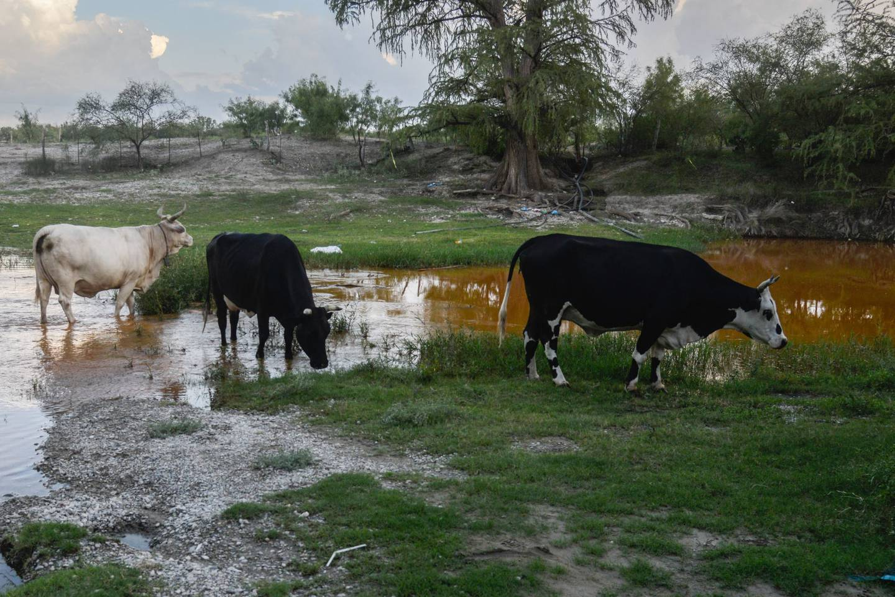
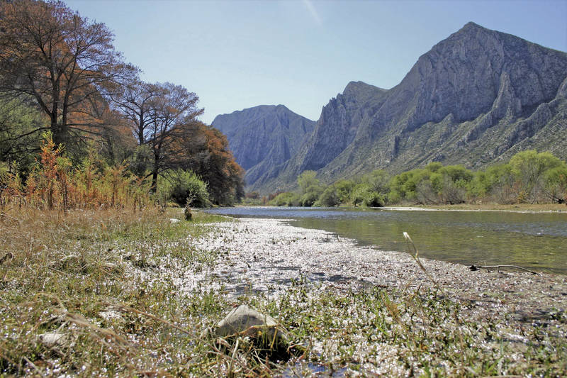
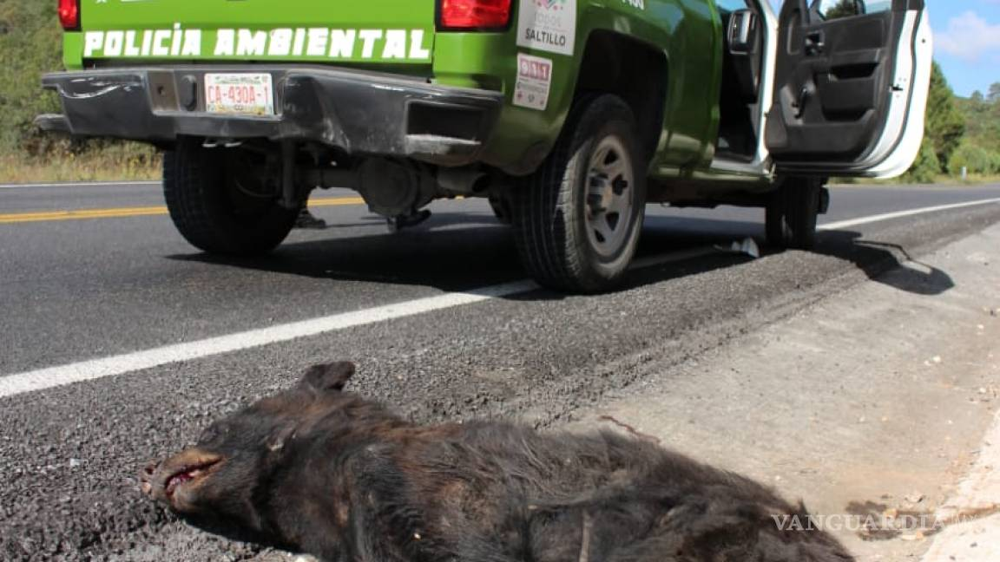
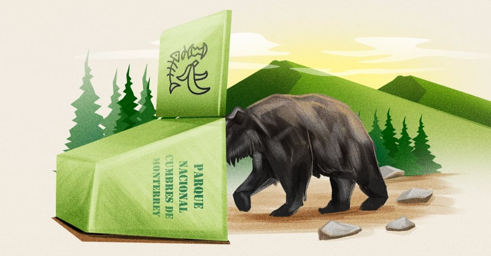
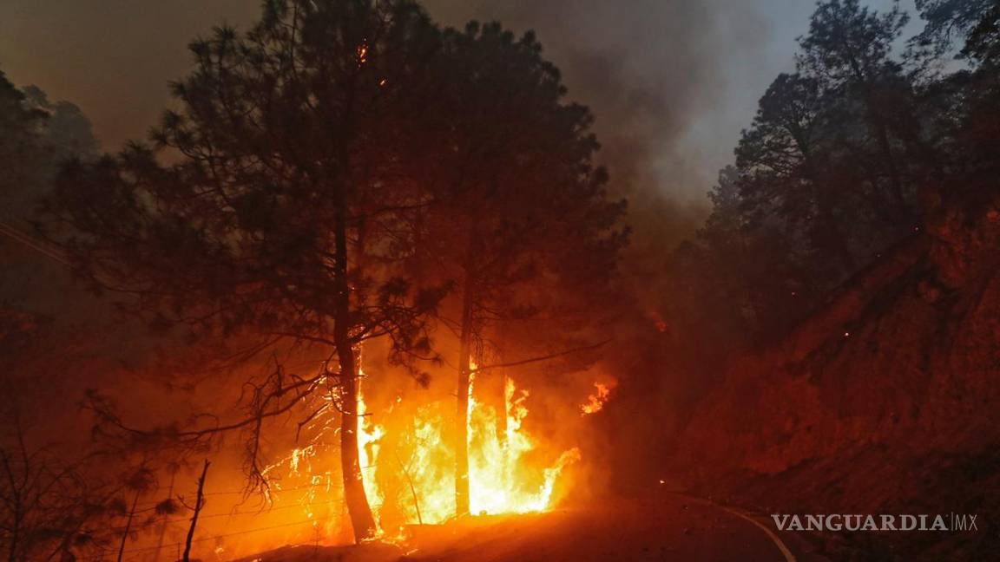
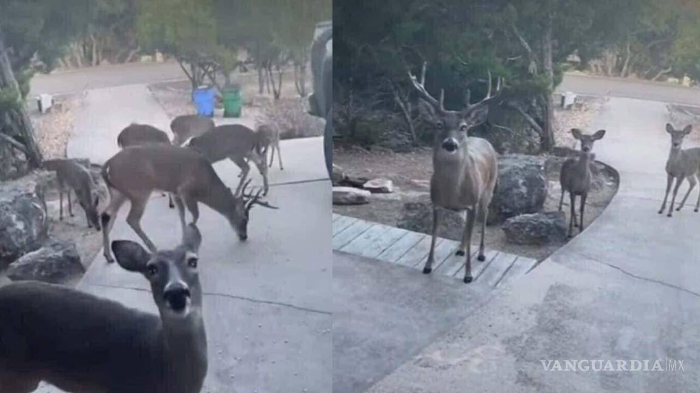

Rio Sabinas
Rio Sabinas
Tras el derrumbe de una mina de carbón en el ejido de “Las Conchas” El río Sabinas ha comenzado a tornarse color naranja debido a que las autoridades están extrayendo agua del pozo de la mina “El Pinabete”, que está contaminada con químicos como azufre y carbón, y el líquido desemboca en ese lugar.

Anteriormente, en noviembre de 2015, la Procuraduría Federal para la Protección Ambiental (Profepa) clausuró de manera temporal nueve minas: una en el municipio de Escobedo, siete en Sabinas y una más en Progreso, de Coahuila, por las afectaciones de la flora y fauna; desde una de las minas se extraía carbón dentro de la zona de protección del río Sabinas. Da clic para volver al inicio
Comarca Lagunera
Comarca Lagunera
La tierra se agrieta. Los productores sociales del campo, los que no tienen volúmenes demenciales de agua concesionados, están sufriendo. Sus animales mueren de inanición, de sed, están en los huesos. Cada día tienen que caminar más para buscar pastura y corrientes de agua para sus rebaños. Por otro lado, casi todos los sectores de Torreón están teniendo problemas de desabasto de agua. El Ayuntamiento trabaja a marchas forzadas para terminar la perforación de 8 pozos prometida para este 2022. Hasta el momento sólo entró en funciones el de la Compresora, mismo que ayuda a distribuir el líquido en el poniente y el primer y segundo cuadro del centro de la ciudad de Torreón.

Actualmente no se puede pensar en vivir en la región a largo plazo porque la Comarca Lagunera se está secando. Cada día tenemos menos agua, el acuífero está sobreexplotado y está lloviendo menos en la cuenca alta del Nazas.
La presa Lázaro Cárdenas, mejor conocida como El Palmito, está al 28% de su capacidad. Es el límite más bajo de los últimos años. En la parte alta de la sierra, donde nace el Río Nazas, está cayendo menos agua del cielo y, la que se alcanza a almacenar, no es para consumo humano.

Da clic para volver al inicio
Carreteras federales
Carreteras federales
Un total de siete osos negros (ursus americanus), fueron arrollados por automovilistas en diversas carreteras de Coahuila, entre el entre el 21 y 26 de septiembre del año 2022, informó Jorge Guerrero, director de Recursos Forestales y Vida Silvestre de la Secretaría de Medio Ambiente del estado.

Segun un reporte del dia 26 de septiembre de 2022
“El día de hoy por la mañana se recibió un reporte de incidentes con un oso en el kilómetro 208 de la Carretera 57 a la altura de la de la caseta, personal técnico fue a verificarlo y resultó ser una osa hembra, aproximadamente de unos 30 kilos, de unos tres años, que ya prácticamente estaba destetada, ya andaba sola, no andaba con la mamá. Causó un accidente al grado tal que un vehículo Chevy lo atropelló y posteriormente perdió el control y se volteó éste vehículo, no hubo lesionados para el caso de la persona que la atropelló, la osa resultó muerta”, relató Jorge Guerrero.
El funcionario indicó que tan solo 40 minutos después, su personal recibió un nuevo reporte de incidente, en el que otra osa fue atropellada.
“Se acudió, ese estaba a escasos metros de la caseta, en el kilómetro 2.4, era una hembra igual de aproximadamente tres años, con pesos muy similares, también atropellada, buscamos la evidencia y al parecer fue un vehículo grande el que la atropelló”, lamentó.
Causas
De acuerdo con el director de Recursos Forestales y Vida Silvestre, en esta época del año los osos negros bajan de la sierra en busca de alimento, a fin de prepararse para su hibernación, pero debido al aumento de construcción de cabañas en el bosque, los incendios, el crecimiento de la mancha urbana, y la falta de disponibilidad de presas en su territorios naturales, cada vez son más susceptibles y tienden a buscar basura en las zonas urbanas.
Para reducir estos percances, se pide a la población respetar los letreros de disminución de velocidades, “ya que está temporada aumentan sus movimientos y transitan por la orilla de la carretera por la basura que hay y eso crea el conflicto”. También se recomiendo a quienes transitan por las carreteras, eviten tirar basura a las orillas y no darles de comer a los osos.

Da clic para volver al inicio
Sierra de Arteaga
Sierra de Arteaga
En la sierra de Arteaga se dio un incendio forestal que comenzó a las 15:30 horas en unas cabañas localizadas en la comunidad de La Pinalosa de Arteaga, Coahuila. Presuntamente se salió de control por que los encargados del paraje turístico no tomaron las medidas necesarias.
Por otra parte, habitantes de comunidades en Arteaga atribuyen el incendio a la irresponsabilidad de los visitantes que llegan a las cabañas provenientes de otros municipios, principalmente de Monterrey.

El fuego expulsó venados, osos, serpientes y otras especies terrestres que habitan en la Sierra y consumió aves refugiadas en la copa de los árboles dónde también los alcanzaron las llamas. Cadáveres de aves posan sobre la hierba carbonizada y animales de granja que huyeron al ver el fuego continúan perdidos entre el asfalto de la carretera y la Sierra.

Además de poner en riesgo la flora y fauna silvestre de la Sierra de Arteaga, la huida de animes salvajes puso en riesgo la labor de los brigadistas pues ante el terror de morir envueltos en fuego, los animales reaccionaron de forma agresiva al verse amenazados. Mientras las serpientes o arañas entre otros animales ponzoñosos también representaban un riesgo para los brigadistas en su labor. Da clic para volver al inicio